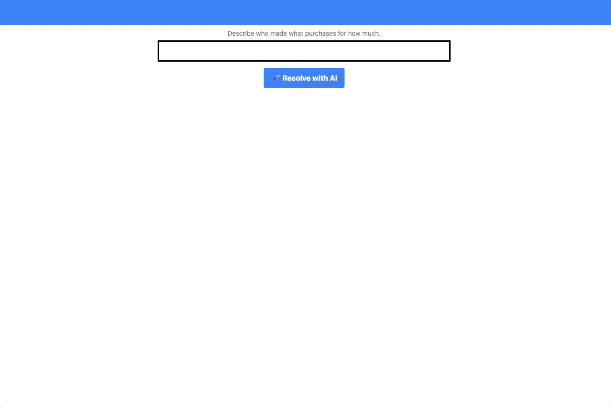

PROJECTS
 SplitGPT: Resolve balances between friends using natural language processing and a debt simplification algorithm (2024).- Frontend: TypeScript, SvelteKit, Tailwind, Vercel.
- Backend: Python, FastAPI, Heroku.
- Uses ChatGPT3.5 and LangChain to extract structured data from text and decompose the problem into smaller tasks.
- What I learned: Prompting was very important for working with the pre-trained ChatGPT3.5 model. I was surprised by how fragile the model was to slight changes in prompts (even with temp=0). I did a lot of prompt engineering and tinkering with agents vs. sequential chains, more freedom vs. constrained outputs. For example, I tried giving an agent a task and math tools to do calculations, and it would make unnecessary tool calls and ultimately fail at the task. It's currently using a simple sequential chain of prompts to fill in a table to the best of the chain's ability (without math tools), and letting the human edit the table on the frontend.
Last update: May 24, 2024